Plains

the Plains is a Moor 类型 生物群系 that can be found on 多种星球 in 绝地潜兵 2.
描述
“这颗星球地表大多是雾气氤氲的高地。茂盛的草原上不时冒出裸露的岩石。
The 浮出地面 of Plains planets are full of green grass but unlike Earth, it features 否 自然 trees. The 浮出地面 is also very rocky, featuring pillars, boulders and large rock formations on it's 浮出地面.
Thanks to it's rocky 浮出地面, some areas will consist of highlands, featuring coastal cliffs that 掉落 down into the ocean. However on non-highland areas, entire beaches and lakes can be found.
The skies which are naturally blue, are very cloudy as it commonly rains on the 行星. With rain, visibility drops and 偶尔 fills the skies.
As for fauna, floating bio-luminescent Jellyfish can be found in the air.
浮出地面 Variations
Metropolises
In parks located in Metropolises, the usual grassy 地形 can be found. Although the 生物群系 seemingly has 否 trees in any wilderness areas, Earth-like trees will generate with grey-brownish leaves in this 生物群系.
小型 rock formations can still be found in parks and grassy areas.
Exostorms
On Plains planets that harbor an Exostorm, the 通常 grey/white 轻型 fog will turn a 轻型 shade of purple. The purple streaks that have been radiated from the 行星 into orbit can be seen from the ground between the clouds both during 白天 and nighttime. It will also permanently drizzle instead of being subjected to the occasional Rainstorms.
Environmental Conditions
 Rainstorms – Torrential rainstorms reduce visibility.
Rainstorms – Torrential rainstorms reduce visibility.
环境危害
- Smoke Shrooms will 爆炸 into a brown smoke if damaged.
- Deep pits of mud slow down 绝地潜兵 trying to move through.
- Tall Jagged Cliffs 通常 line the edges of the 任务 area and any 绝地潜兵 unlucky enough to fall off will instantly die.
天气
- Cloudy
- Cloudy is the base 天气 of the Plains 生物群系, featuring large clouds that cover around 50% of the skies, as well as a very thick fog.
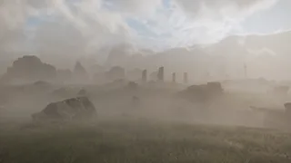
- Overcast
- Overcast 天气 features skies almost completely filled by clouds with 小型 gaps for 轻型 to come in through. Unlike on cloudy 天气, fog is barely present, only being slightly thicker than on 大部分星球.
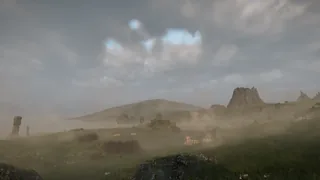
- Rainstorm
- Rainstorms 天气 features skies that are completely covered by clouds, as well as some fog. Rain and wind are also clearly present, though the 行星 also darkens slightly.
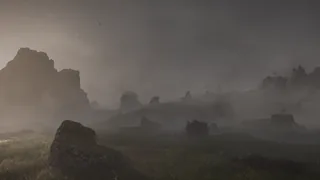
普通
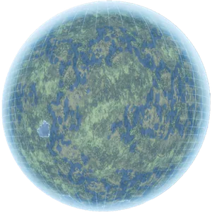
Hologram of a Plains 行星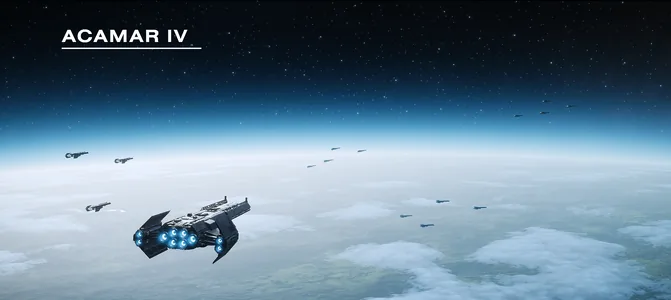
轨道武器 shot of a Plains 行星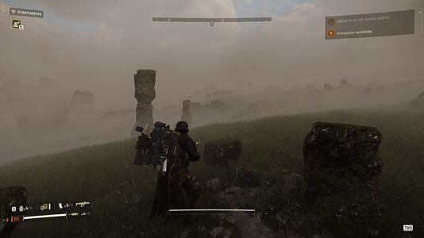
An 概述 of the Plains 生物群系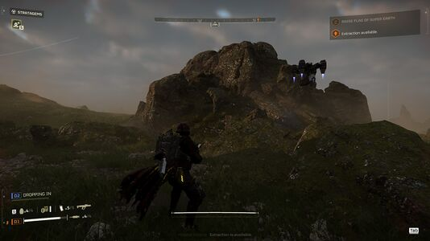
A rocky hill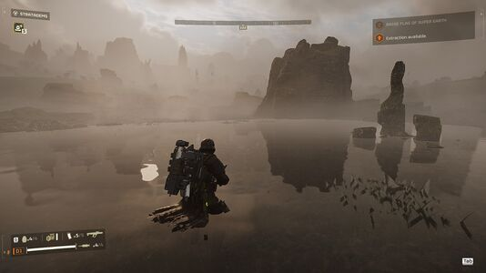
A body of water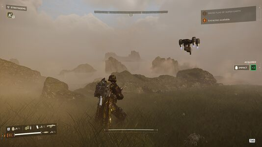
Some islands in a lake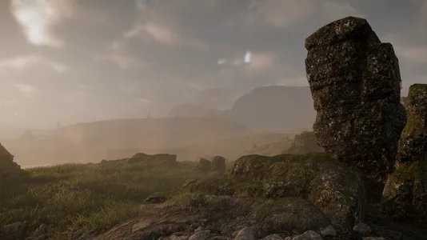
Odd rock formation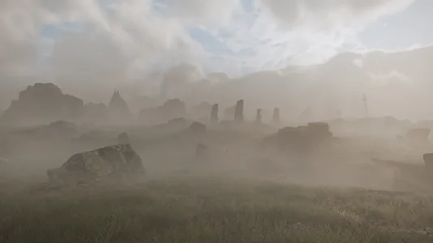
Rocky hills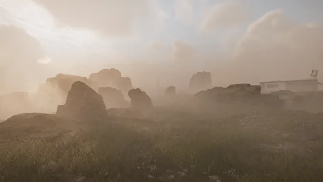
Rocky flatlands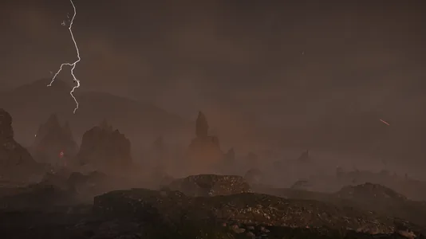
The Plains during a 闪电 storm
Metropolis
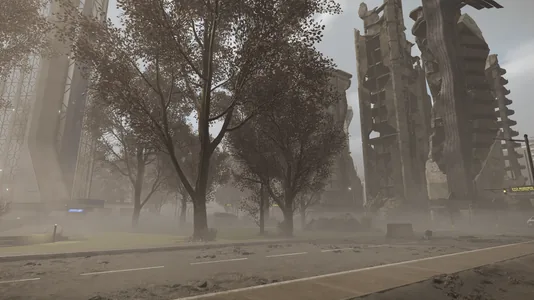
终结族 防御 City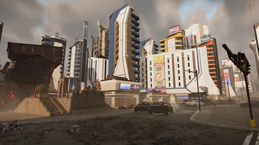
机器人 防御 City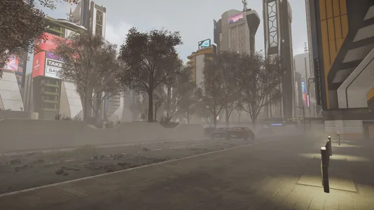
光能者 防御 City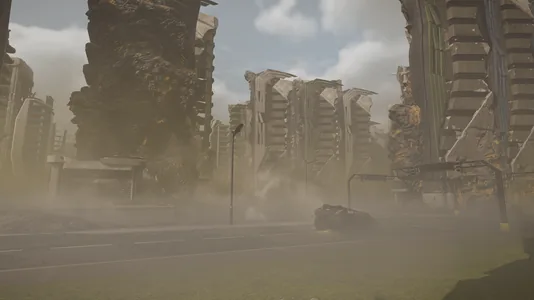
终结族 controlled City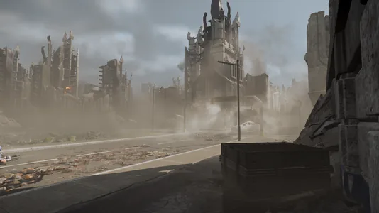
机器人 controlled City
Exostorm
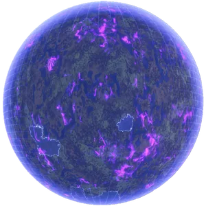
Hologram of a Plains 行星 with a 级别 1 Exostorm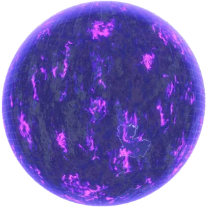
Hologram of a Plains 行星 with a 级别 2 Exostorm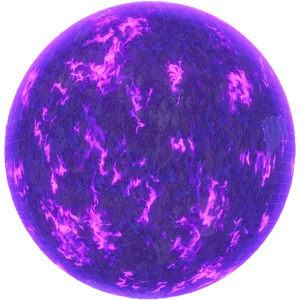
Hologram of a Plains 行星 with a 级别 3 Exostorm- Orbit (级别 1)
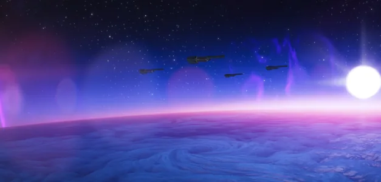
Orbit (级别 2)- Orbit (级别 3)
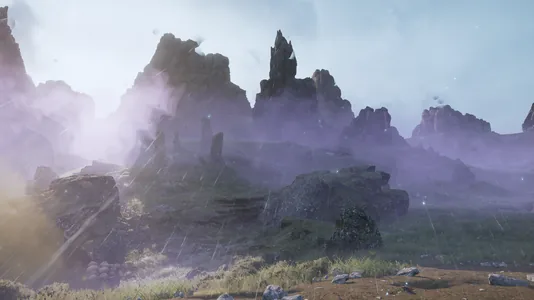
白天 (级别 1)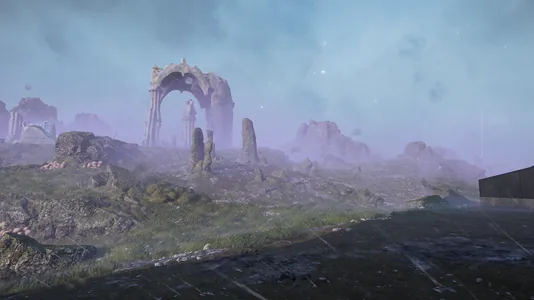
白天 (级别 1)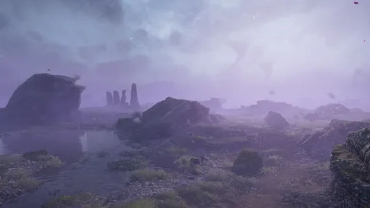
白天 (级别 2)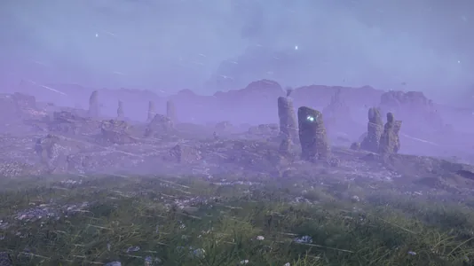
白天 (级别 3)- Sky, 白天
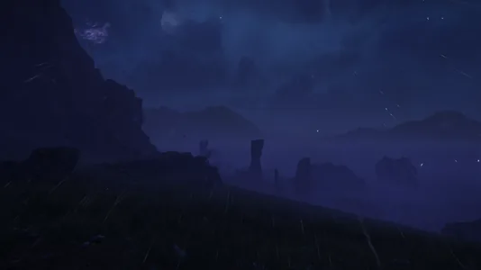
Nighttime (级别 1)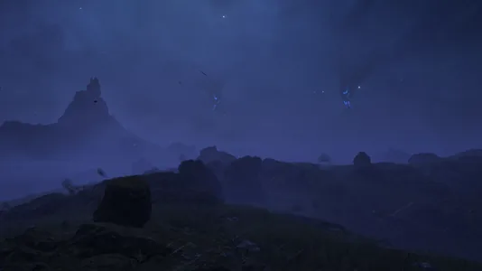
Nighttime (级别 2)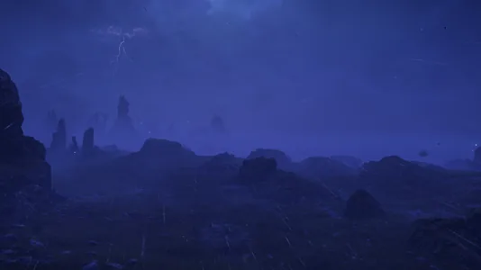
Nighttime (级别 3)- Sky, Nighttime
Planets
 Pathfinder V
Pathfinder V- Fort Union
- Volterra
 Gemstone Bluffs
Gemstone Bluffs- Acamar IV
- Achernar Secundus
- Electra Bay
- Afoyay Bay
 Matar Bay
Matar Bay- Reaf
- Termadon
- Fenmire
- The Weir
- Bellatrix
- Varylia 5
- Hort
- Draupnir
- Obari
- Mintoria